Most gardens are planned around spring and summer, then left to fade quietly through fall.
A garden can just as easily peak in autumn, it just requires planning for it specifically, rather than treating fall as an afterthought.
This covers what that actually takes.

1. Attract Fall Wildlife
Berries, seed heads left standing, and a simple water source all bring birds and pollinators into the garden well into the season.
This adds a layer of life and movement to the garden that plants alone, however colorful, can't provide on their own.
2. Water Smart, Not on Autopilot
Fall rainfall varies more than people assume, and newly planted fall perennials still need consistent watering to establish properly before winter.
Checking soil moisture directly, rather than assuming fall weather handles it, protects the season's plantings through their most vulnerable early weeks.
3. Add Structure With Hardscaping
A defined path, a low stone border, or a simple structural element gives the garden a backbone that holds up even as plants die back for winter.
This matters more in fall and winter than any other season, since hardscaping is often what keeps the garden from looking bare once the plants recede.
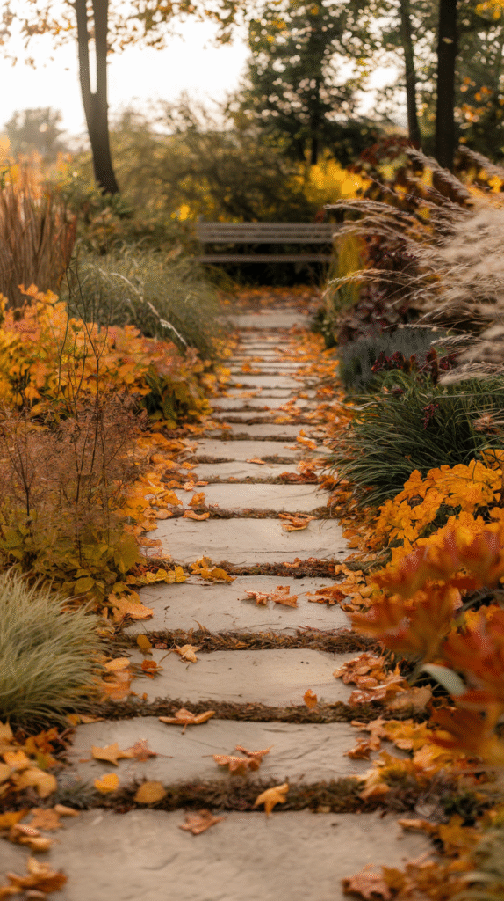

4. Keep Things Blooming Late
Choosing plant varieties specifically known for late-season blooms extends the garden's color further into fall than most default plant choices would.
This takes a bit more research at the plant-buying stage, but it's what separates a garden that fades in September from one still blooming in November.
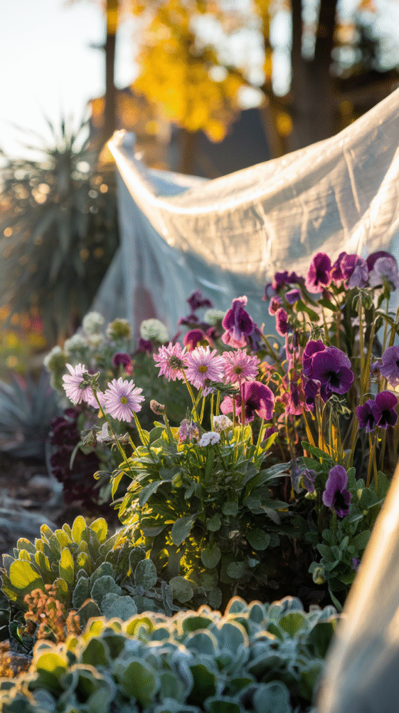
5. Mulch and Compost Properly
A fresh layer of mulch protects root systems heading into colder weather while also giving garden beds a tidier, more finished look.
Fall is also the ideal time to add compost, since it has the whole winter to break down before spring planting begins.
6. Layer In Decor Without Overdoing It
A few pumpkins, a simple wreath on a garden gate, or a tasteful scarecrow add seasonal character without tipping into a seasonal gift shop.
Restraint matters here more than in almost any other part of the fall garden, the plants should still be doing most of the visual work.
7. Don't Overlook Fall Vegetables and Herbs
Kale, Swiss chard, and many herbs actually thrive in cooler fall temperatures, adding both visual texture and genuine function to the garden.
This is a practical way to keep a vegetable garden productive well past when summer crops would have finished.
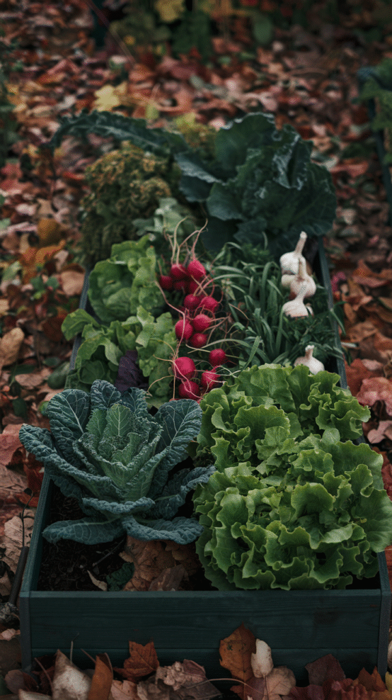
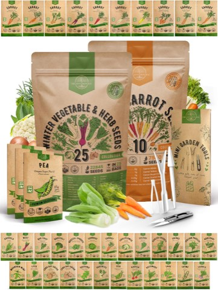
Organo Republic Winter Vegetable and Greens Seeds with Carrot Seeds, Variety Pack
Shop on Amazon8. Add Trees and Shrubs for Big Color
A single well-placed tree with strong fall foliage, maple, dogwood, certain oaks, can single-handedly define a garden's whole fall character.
Shrubs with colorful fall leaves or berries extend that same drama down to eye level, filling the gap between tree canopy and ground-level plants.
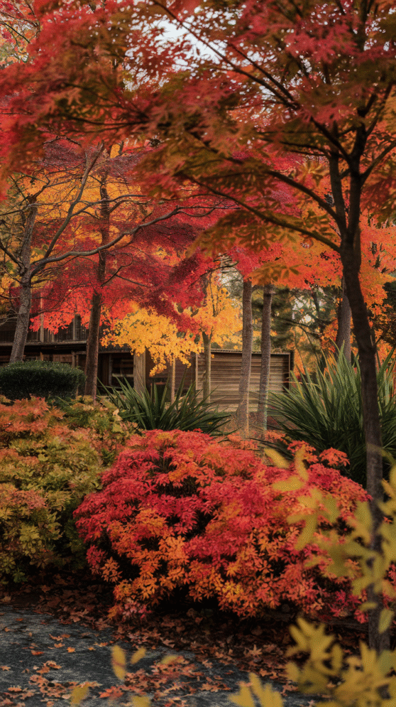

9. Choose Plants for Real Fall Drama
Mums, asters, ornamental grasses, and sedum all deliver genuine color and texture specifically in fall, rather than just hanging on from summer.
Layering bloom times across different plant varieties keeps color going longer than relying on just one or two fall-specific species.
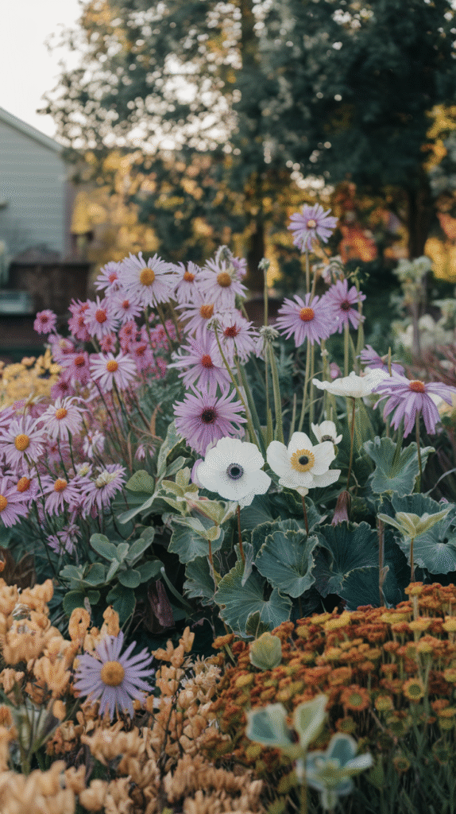
Organic Kale Seeds, Vates Blue Scotch Curled, 500 Seeds, Non-GMO
Shop on AmazonOrgano Republic Winter Vegetable and Greens Seeds with Carrot Seeds, Variety Pack
Shop on Amazon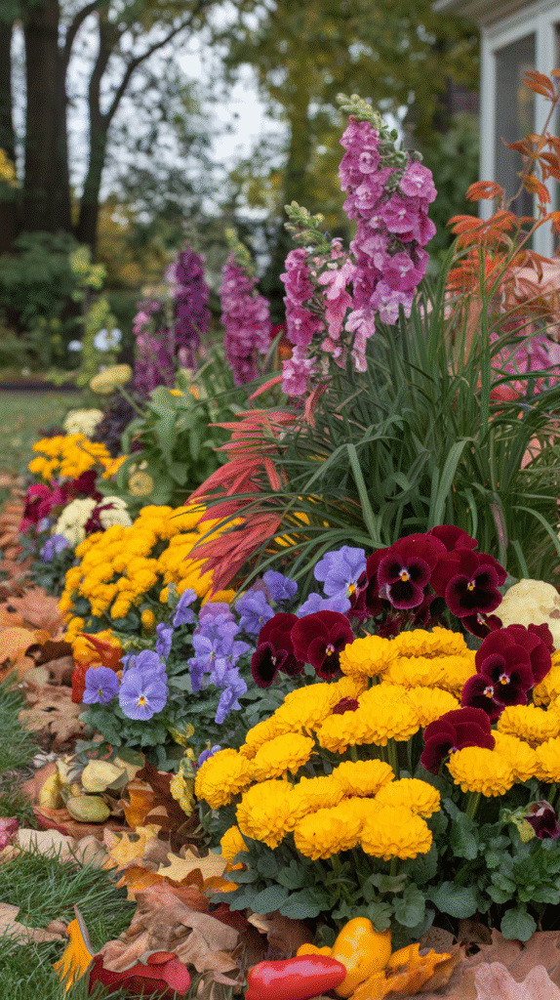
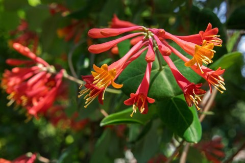
Major Wheeler Fragrant Honeysuckle Vine, Perennial Lonicera, 2.5 Inch Pot
Shop on Amazon10. Plan Before Planting Anything
Mapping out which beds get morning versus afternoon sun, and noting what's already blooming when, prevents a fall garden plan from working against the existing layout.
This step is easy to skip in the excitement of plant shopping, but it's what keeps the eventual garden from looking scattered.
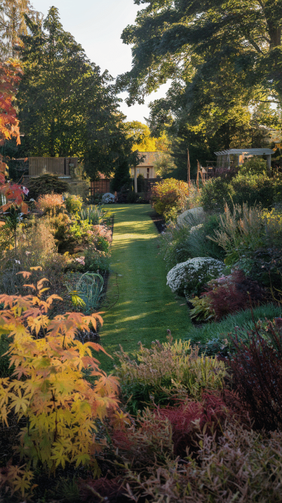
11. Why Bother With a Fall Garden at All
A garden that only looks good for a few months of the year is working at half its potential, especially in a climate where fall stretches on for weeks.
Fall color, deep reds, oranges, golds, also tends to be more dramatic and saturated than typical spring pastels, given the right plant choices.
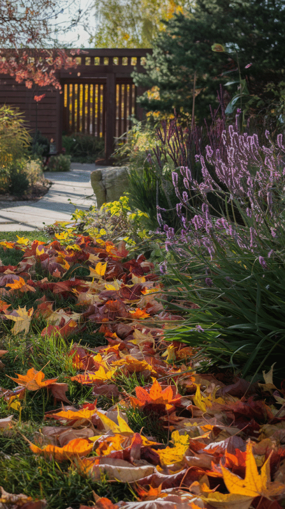
Perennial Farm Marketplace Hellebore Frostkiss Anna's Red, Lenten Rose
Shop on AmazonRed and White Triumph Tulip Bulbs Holiday Mixture, 20 Bulbs
Shop on Amazon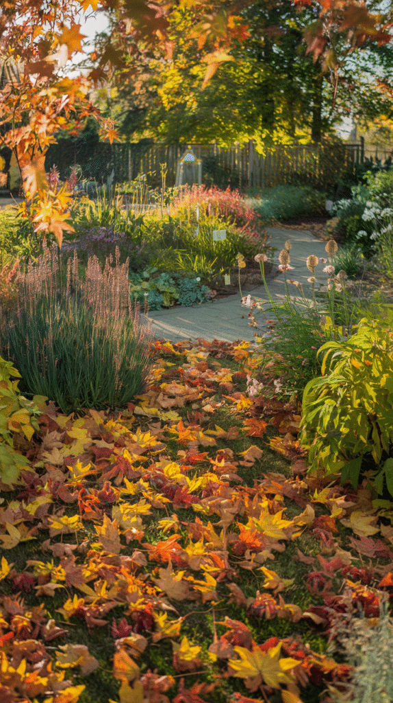
Fall Gardens Deserve the Spotlight
None of these steps require redoing an existing garden from scratch.
Start with plant choice and a bit of planning, since both have the biggest effect on whether fall actually becomes the garden's best season.
A garden built for fall rewards the effort with color that lasts long after most gardens have already gone quiet.